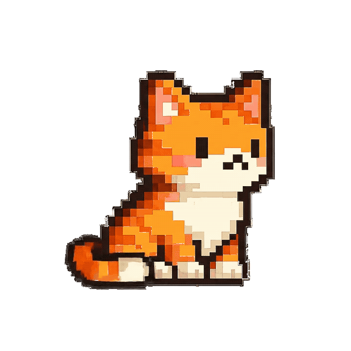
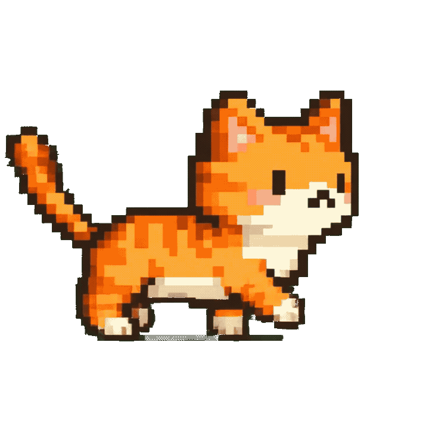
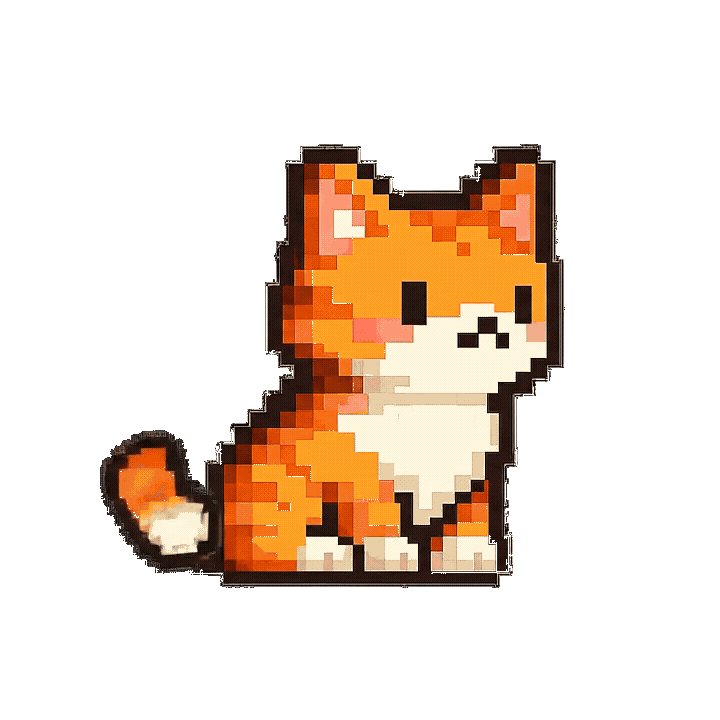

DAP overview
DAP은 바탕화면에 머무는 Personal AI OS layer입니다
DAP는 투명 오버레이 펫, Spotlight 커맨드 바, LightChat, 선택 영역 퀵액션, 유저 메모리를 하나로 묶습니다. 현재 Electron 앱은 API Key 입력 대신 사용자가 로그인한 Claude/Codex CLI를 활용하며, 작업 흐름을 방해하지 않는 조용한 데스크톱 레이어를 지향합니다.
- 지원 플랫폼
- Windows 11 · macOS Apple Silicon · macOS Intel
- AI 연결
- Claude CLI · Codex CLI 구독 로그인
- 런타임
- Electron · TypeScript · Local-first settings
Core features

SPOTLIGHT
Ctrl+Shift+Space로 어디서든 커맨드 바를 열고, 현재 흐름을 끊지 않고 DAP에게 요청합니다.
SUBSCRIPTION CLI
API Key 입력 없이 로그인된 Claude 또는 Codex CLI를 headless로 호출해 기존 구독을 활용합니다.
QUICK ACTIONS
텍스트를 선택하거나 복사하면 번역, 요약, 다듬기, 설명 같은 액션을 커서 근처에서 바로 실행합니다.
PET INTERFACE
Nabi가 투명 오버레이로 화면 위에 머물며 작업, 생각, 오류, 기쁨 같은 상태를 조용히 보여줍니다.

Getting started
Windows, macOS Apple Silicon, macOS Intel 설치 파일 중 현재 환경에 맞는 파일을 내려받아 설치합니다.
온보딩 또는 설정에서 Claude/Codex를 선택합니다. 터미널의 claude login 또는 codex login 상태를 사용합니다.
Ctrl+Shift+Space로 Spotlight, Ctrl+Alt+C로 채팅창을 열고 선택 영역 퀵액션을 실행합니다.
자주 묻는 질문
DAP은 무엇인가요?
DAP(Desk AI Pet)은 Windows/macOS 바탕화면에 상주하는 데스크톱 AI 펫이자 Personal AI OS layer입니다.
Oshi Desk와 어떤 관계인가요?
DAP는 AI와 데스크톱 펫을 결합한 기반 프로젝트입니다. Oshi Desk는 이 흐름에서 시작된 캐릭터 중심 데스크톱 펫 서비스입니다.
API Key가 필요한가요?
현재 Electron 앱의 기본 흐름은 API Key 입력이 아니라 로그인된 Claude/Codex CLI를 사용하는 구독 연결입니다.